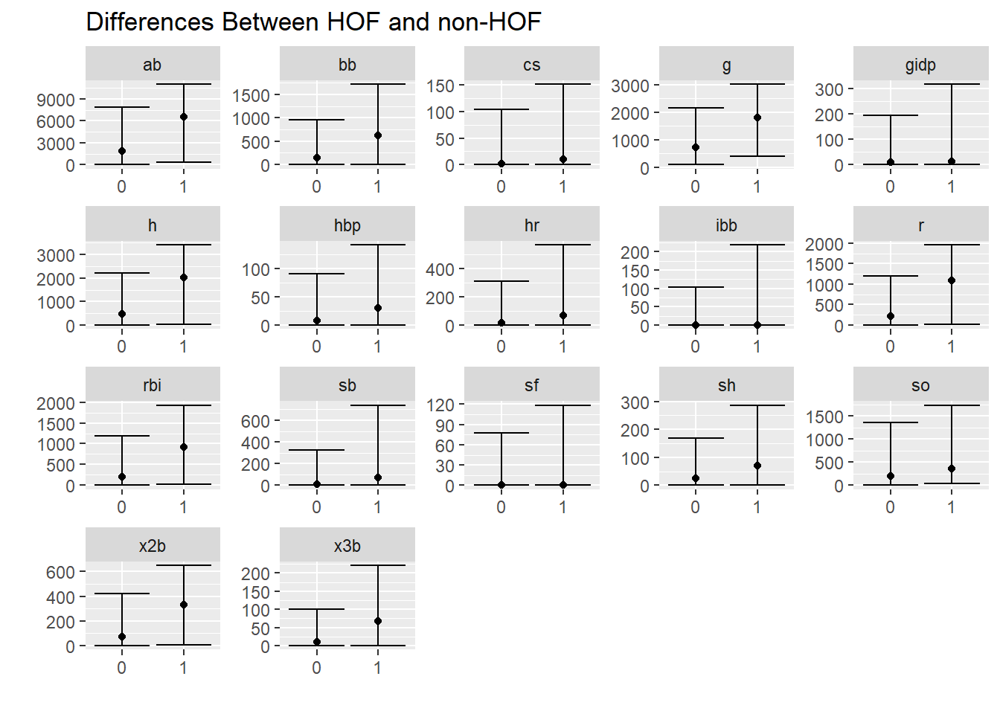
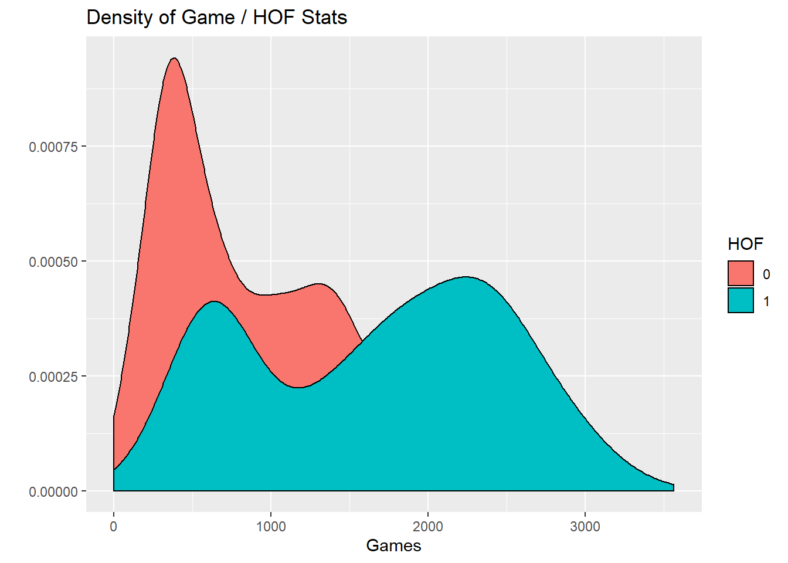
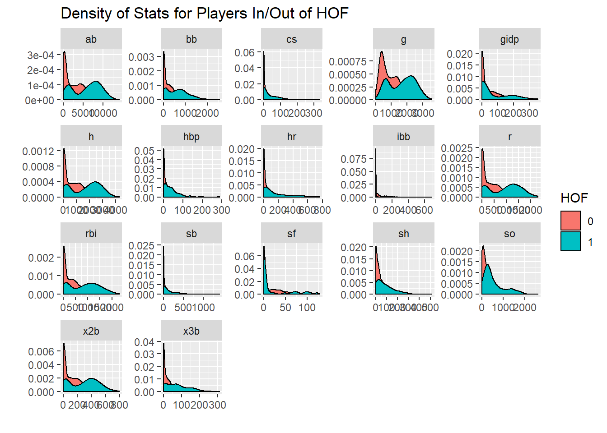
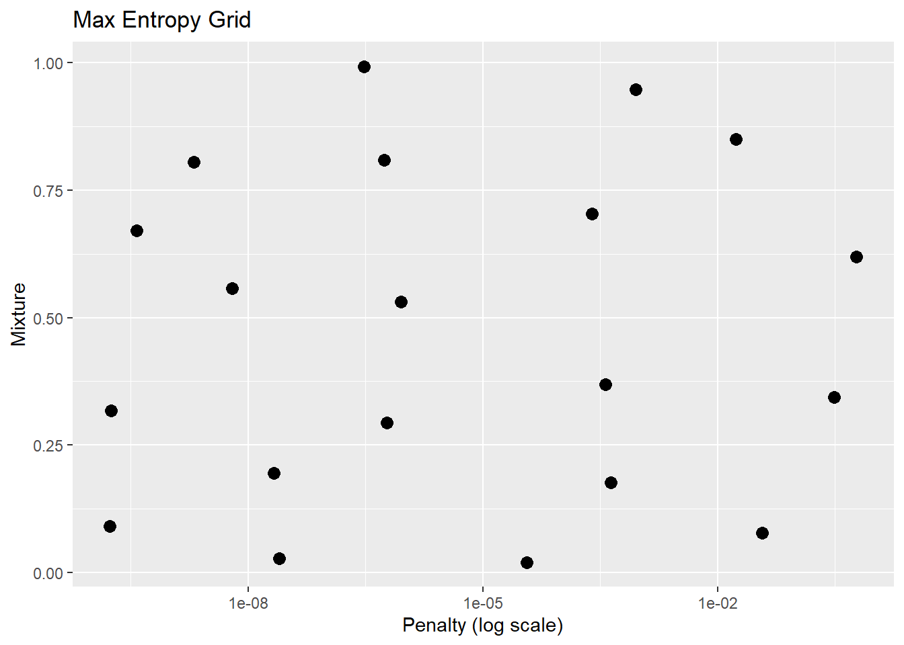
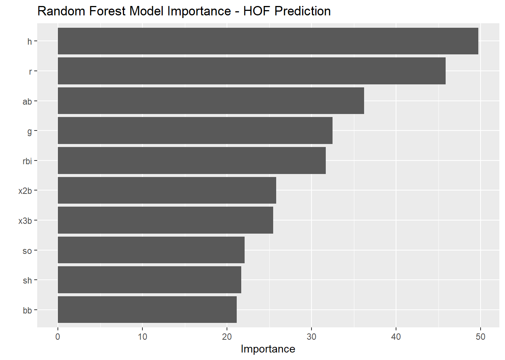

5 Data Modeling
In the last year or so, Max Kuhn, working for RStudio, has developed tidymodels. Tidymodels is a modeling framework that follows tidy coding principles. It provides a streamlined technique for preprocessing, execution, and validation
In this section, you will learn:
- A small amount of data exploration.
- The basics of
tidymodels
- splitting data
- running multiple models
- cross validation
- selecting the best model
- How to parallelize your code
In this section, we will use the following libraries and data:
library(tidyverse)
library(tidymodels)
library(recipes)
library(tune)
library(janitor)
library(doFuture)
library(yardstick)
library(vip)
data <- read_csv("data_sources/Batting.csv", col_types = cols(SF = col_double(), GIDP = col_double())) %>%
clean_names()
hofdata <- read_csv("data_sources/HallOfFame.csv") ## Parsed with column specification:
## cols(
## playerID = col_character(),
## yearid = col_double(),
## votedBy = col_character(),
## ballots = col_double(),
## needed = col_double(),
## votes = col_double(),
## inducted = col_character(),
## category = col_character(),
## needed_note = col_character()
## )## # A tibble: 6 x 22
## player_id year_id stint team_id lg_id g ab r h x2b x3b hr rbi sb cs bb so ibb hbp sh sf gidp
## <chr> <dbl> <dbl> <chr> <chr> <dbl> <dbl> <dbl> <dbl> <dbl> <dbl> <dbl> <dbl> <dbl> <dbl> <dbl> <dbl> <dbl> <dbl> <dbl> <dbl> <dbl>
## 1 abercda01 1871 1 TRO <NA> 1 4 0 0 0 0 0 0 0 0 0 0 NA NA NA NA NA
## 2 addybo01 1871 1 RC1 <NA> 25 118 30 32 6 0 0 13 8 1 4 0 NA NA NA NA NA
## 3 allisar01 1871 1 CL1 <NA> 29 137 28 40 4 5 0 19 3 1 2 5 NA NA NA NA NA
## 4 allisdo01 1871 1 WS3 <NA> 27 133 28 44 10 2 2 27 1 1 0 2 NA NA NA NA NA
## 5 ansonca01 1871 1 RC1 <NA> 25 120 29 39 11 3 0 16 6 2 2 1 NA NA NA NA NA
## 6 armstbo01 1871 1 FW1 <NA> 12 49 9 11 2 1 0 5 0 1 0 1 NA NA NA NA NA## # A tibble: 6 x 9
## playerID yearid votedBy ballots needed votes inducted category needed_note
## <chr> <dbl> <chr> <dbl> <dbl> <dbl> <chr> <chr> <chr>
## 1 cobbty01 1936 BBWAA 226 170 222 Y Player <NA>
## 2 ruthba01 1936 BBWAA 226 170 215 Y Player <NA>
## 3 wagneho01 1936 BBWAA 226 170 215 Y Player <NA>
## 4 mathech01 1936 BBWAA 226 170 205 Y Player <NA>
## 5 johnswa01 1936 BBWAA 226 170 189 Y Player <NA>
## 6 lajoina01 1936 BBWAA 226 170 146 N Player <NA>Lets try to develop an informed answer to the question: What baseball statistics help indicate whether or not a baseball player will make the Hall of Fame?
5.1 Prepare Data For Analysis
For this analysis, lets organize our data to identify players who are in the hall of fame as well as those eligible.
hofdata <-
hofdata %>%
clean_names() %>%
select(player_id, inducted) %>%
mutate(hof = ifelse(inducted=="Y",1,0)) %>%
filter(hof==1)
hofdata %>% count(inducted)## # A tibble: 1 x 2
## inducted n
## <chr> <int>
## 1 Y 317years_played <-
data %>%
group_by(player_id) %>%
summarise(across(year_id, .fns = c("min" = min, "max" = max))) %>% # dplyr 1.0.0
mutate(total_years = year_id_max - year_id_min)## `summarise()` ungrouping output (override with `.groups` argument)## # A tibble: 18,915 x 4
## player_id year_id_min year_id_max total_years
## <chr> <dbl> <dbl> <dbl>
## 1 aardsda01 2004 2015 11
## 2 aaronha01 1954 1976 22
## 3 aaronto01 1962 1971 9
## 4 aasedo01 1977 1990 13
## 5 abadan01 2001 2006 5
## 6 abadfe01 2010 2016 6
## 7 abadijo01 1875 1875 0
## 8 abbated01 1897 1910 13
## 9 abbeybe01 1892 1896 4
## 10 abbeych01 1893 1897 4
## # ... with 18,905 more rowshof <-
data %>%
group_by(player_id) %>%
summarise_at(vars(g:gidp), list(~sum(.,na.rm = TRUE))) %>%
ungroup() %>%
left_join(years_played, by = "player_id") %>%
left_join(hofdata, by = "player_id") %>%
mutate(inducted = if_else(inducted=="Y",1,0)) %>%
mutate(inducted = replace_na(inducted, 0)) %>%
filter(total_years >= 10) %>%
# filter(g>=1000) %>%
mutate(inducted = as.factor(inducted)) %>%
select(-hof)
hof## # A tibble: 3,475 x 22
## player_id g ab r h x2b x3b hr rbi sb cs bb so ibb hbp sh sf gidp year_id_min year_id_max total_years inducted
## <chr> <dbl> <dbl> <dbl> <dbl> <dbl> <dbl> <dbl> <dbl> <dbl> <dbl> <dbl> <dbl> <dbl> <dbl> <dbl> <dbl> <dbl> <dbl> <dbl> <dbl> <fct>
## 1 aardsda01 331 4 0 0 0 0 0 0 0 0 0 2 0 0 1 0 0 2004 2015 11 0
## 2 aaronha01 3298 12364 2174 3771 624 98 755 2297 240 73 1402 1383 293 32 21 121 328 1954 1976 22 1
## 3 aasedo01 448 5 0 0 0 0 0 0 0 0 0 3 0 0 0 0 0 1977 1990 13 0
## 4 abbated01 855 3044 355 772 99 43 11 324 142 0 289 16 0 33 93 0 0 1897 1910 13 0
## 5 abbotgl01 248 0 0 0 0 0 0 0 0 0 0 0 0 0 0 0 0 1973 1984 11 0
## 6 abbotji01 263 21 0 2 0 0 0 3 0 0 0 10 0 0 3 0 1 1989 1999 10 0
## 7 abbotpa01 162 20 2 5 1 0 0 2 0 0 0 6 0 0 5 0 0 1990 2004 14 0
## 8 abernte02 681 181 12 25 3 0 0 9 0 0 6 74 0 2 15 0 4 1955 1972 17 0
## 9 abreubo01 2425 8480 1453 2470 574 59 288 1363 400 128 1476 1840 115 33 7 85 165 1996 2014 18 0
## 10 adairje01 1165 4019 378 1022 163 19 57 366 29 29 208 499 31 17 41 30 149 1958 1970 12 0
## # ... with 3,465 more rowsFilter for HOF Eligible Players
## # A tibble: 2 x 2
## inducted n
## <fct> <int>
## 1 0 2921
## 2 1 232## # A tibble: 3,153 x 19
## player_id g ab r h x2b x3b hr rbi sb cs bb so ibb hbp sh sf gidp inducted
## <chr> <dbl> <dbl> <dbl> <dbl> <dbl> <dbl> <dbl> <dbl> <dbl> <dbl> <dbl> <dbl> <dbl> <dbl> <dbl> <dbl> <dbl> <fct>
## 1 aaronha01 3298 12364 2174 3771 624 98 755 2297 240 73 1402 1383 293 32 21 121 328 1
## 2 aasedo01 448 5 0 0 0 0 0 0 0 0 0 3 0 0 0 0 0 0
## 3 abbated01 855 3044 355 772 99 43 11 324 142 0 289 16 0 33 93 0 0 0
## 4 abbotgl01 248 0 0 0 0 0 0 0 0 0 0 0 0 0 0 0 0 0
## 5 abbotji01 263 21 0 2 0 0 0 3 0 0 0 10 0 0 3 0 1 0
## 6 abbotpa01 162 20 2 5 1 0 0 2 0 0 0 6 0 0 5 0 0 0
## 7 abernte02 681 181 12 25 3 0 0 9 0 0 6 74 0 2 15 0 4 0
## 8 adairje01 1165 4019 378 1022 163 19 57 366 29 29 208 499 31 17 41 30 149 0
## 9 adamsba01 482 1019 79 216 31 15 3 75 1 1 53 177 0 1 35 0 0 0
## 10 adamsbo03 1281 4019 591 1082 188 49 37 303 67 30 414 447 1 17 78 5 62 0
## # ... with 3,143 more rows## # A tibble: 322 x 18
## player_id g ab r h x2b x3b hr rbi sb cs bb so ibb hbp sh sf gidp
## <chr> <dbl> <dbl> <dbl> <dbl> <dbl> <dbl> <dbl> <dbl> <dbl> <dbl> <dbl> <dbl> <dbl> <dbl> <dbl> <dbl> <dbl>
## 1 aardsda01 331 4 0 0 0 0 0 0 0 0 0 2 0 0 1 0 0
## 2 abreubo01 2425 8480 1453 2470 574 59 288 1363 400 128 1476 1840 115 33 7 85 165
## 3 adamsmi03 410 2 0 0 0 0 0 0 0 0 0 0 0 0 0 0 0
## 4 affelje01 774 17 0 3 0 0 0 2 0 0 2 6 0 0 0 0 0
## 5 alberma01 452 35 1 3 1 0 0 0 0 0 0 21 0 0 3 0 0
## 6 andinro01 481 1344 159 313 58 1 18 97 24 12 113 313 2 6 21 7 42
## 7 ankieri01 653 1921 260 462 101 10 76 251 21 12 162 555 13 12 8 12 31
## 8 arroybr01 421 603 35 77 16 0 6 29 1 0 14 266 0 1 82 3 8
## 9 atchisc01 300 2 0 0 0 0 0 0 0 0 0 1 0 0 0 0 0
## 10 ayalalu01 534 14 0 4 1 0 0 0 0 0 0 3 0 0 3 0 0
## # ... with 312 more rows5.2 Data Exploration
Percentage of players in the dataset who are in the HOF
## # A tibble: 2 x 3
## inducted n prop
## <fct> <int> <dbl>
## 1 0 2921 0.926
## 2 1 232 0.0736Visual difference in statistics between HOF and non HOF
hof %>%
select(g:gidp, inducted) %>%
pivot_longer(cols = g:gidp) %>%
group_by(inducted,name) %>%
summarise(
lwr_quantile = quantile(value, c(.025)),
median = quantile(value, c(.5)),
upper_quantile = quantile(value, c(.975)),
) %>%
ggplot(aes(x=inducted,y=median)) +
geom_point() +
geom_errorbar(aes(ymin = lwr_quantile, ymax = upper_quantile)) +
theme(legend.position = "none") +
labs(x= "",y = "", title = "Differences Between HOF and non-HOF") +
facet_wrap(~name, scales = "free")## `summarise()` regrouping output by 'inducted' (override with `.groups` argument)
Well, won’t players who are in the HOF had played longer? Therefore they should have more hits, home runs, etc?
Lets compare the number of games of players in the HOF vs out of the HOF.
hof %>%
select(g, inducted) %>%
ggplot(aes(x=g, fill = inducted)) +
geom_density() +
labs(x="Games", y = "", fill = "HOF",
title = "Density of Game / HOF Stats")
Lets look at this for every statistic
hof %>%
select(g:gidp, inducted) %>%
pivot_longer(cols = g:gidp) %>%
ggplot(aes(x=value, fill = inducted)) +
geom_density() +
facet_wrap(~name, scales = "free") +
labs(x="",y = "", fill = "HOF",
title = "Density of Stats for Players In/Out of HOF")
5.3 Split Data test/train
To begin modeling, we’ll need to split our data into a testing, training, and validation set.
set.seed(str_length("beatnavy"))
hof_initial_split <- initial_split(hofmod, prop = 0.80)
hof_initial_split## <2523/630/3153>5.4 Preprocess Data
A recipe is a description of what steps should be applied to a data set in order to get it ready for data analysis.
tidymodels / recipes currently offers about 30 ‘steps’. More documentation for the recipes package is here
We first specify the “recipe” or specify what we are trying to model and with what data.
## Data Recipe
##
## Inputs:
##
## role #variables
## outcome 1
## predictor 18From here, we need to specify other preprocessing steps. We will add these to the recipe.
Once we complete these steps, we ‘prep’ the data.
preprocessing_recipe <-
recipe(inducted ~ ., data = training(hof_initial_split)) %>%
step_knnimpute(all_numeric()) %>%
step_center(all_numeric()) %>%
step_scale(all_numeric()) %>%
step_rm(player_id) %>%
prep()
preprocessing_recipe## Data Recipe
##
## Inputs:
##
## role #variables
## outcome 1
## predictor 18
##
## Training data contained 2523 data points and no missing data.
##
## Operations:
##
## K-nearest neighbor imputation for player_id, ab, r, h, x2b, x3b, hr, rbi, sb, cs, bb, so, ibb, hbp, sh, sf, gidp, g [trained]
## Centering for g, ab, r, h, x2b, x3b, hr, rbi, sb, cs, bb, so, ibb, hbp, sh, sf, gidp [trained]
## Scaling for g, ab, r, h, x2b, x3b, hr, rbi, sb, cs, bb, so, ibb, hbp, sh, sf, gidp [trained]
## Variables removed player_id [trained]5.5 Apply Preprocessing
For a recipe with at least one preprocessing operations that has been trained by recipe(), apply the computations to the data.
hof_training_preprocessed_tbl <-
preprocessing_recipe %>%
bake(training(hof_initial_split))
hof_training_preprocessed_tbl## # A tibble: 2,523 x 18
## g ab r h x2b x3b hr rbi sb cs bb so ibb hbp sh sf gidp inducted
## <dbl> <dbl> <dbl> <dbl> <dbl> <dbl> <dbl> <dbl> <dbl> <dbl> <dbl> <dbl> <dbl> <dbl> <dbl> <dbl> <dbl> <fct>
## 1 3.72 3.65 4.29 3.95 3.62 1.99 7.24 4.97 1.69 1.70 3.55 2.83 7.85 0.439 -0.415 4.56 4.65 1
## 2 -0.770 -1.06 -0.919 -0.980 -0.926 -0.747 -0.606 -0.891 -0.550 -0.619 -0.847 -0.911 -0.444 -0.673 -0.820 -0.590 -0.714 0
## 3 -1.09 -1.06 -0.919 -0.980 -0.926 -0.747 -0.606 -0.891 -0.550 -0.619 -0.847 -0.920 -0.444 -0.673 -0.820 -0.590 -0.714 0
## 4 -1.06 -1.05 -0.919 -0.977 -0.926 -0.747 -0.606 -0.884 -0.550 -0.619 -0.847 -0.892 -0.444 -0.673 -0.762 -0.590 -0.697 0
## 5 -1.22 -1.05 -0.914 -0.973 -0.919 -0.747 -0.606 -0.886 -0.550 -0.619 -0.847 -0.903 -0.444 -0.673 -0.724 -0.590 -0.714 0
## 6 -0.403 -0.993 -0.890 -0.947 -0.904 -0.747 -0.606 -0.868 -0.550 -0.619 -0.828 -0.719 -0.444 -0.604 -0.531 -0.590 -0.648 0
## 7 0.360 0.470 -0.0125 0.355 0.262 -0.215 -0.0132 0.0431 -0.279 0.301 -0.195 0.432 0.433 -0.0824 -0.0299 0.688 1.72 0
## 8 -0.717 -0.674 -0.730 -0.698 -0.700 -0.327 -0.574 -0.700 -0.540 -0.587 -0.681 -0.440 -0.444 -0.638 -0.146 -0.590 -0.714 0
## 9 0.543 0.470 0.498 0.433 0.444 0.624 -0.221 -0.118 0.0751 0.332 0.452 0.292 -0.416 -0.0824 0.683 -0.377 0.301 0
## 10 0.768 1.06 1.11 1.09 0.889 0.596 -0.512 0.115 0.886 0.967 0.574 -0.315 -0.444 0.300 1.80 -0.590 -0.485 0
## # ... with 2,513 more rows5.6 Prepare Cross Validation
This partitions our data into v folds. In our case, 5.
This yields a data frame with a nested list of training / testing data.
set.seed(str_length("beatnavy"))
hof_cv_folds <-
training(hof_initial_split) %>%
bake(preprocessing_recipe, new_data = .) %>%
vfold_cv(v = 5)
hof_cv_folds## # 5-fold cross-validation
## # A tibble: 5 x 2
## splits id
## <named list> <chr>
## 1 <split [2K/505]> Fold1
## 2 <split [2K/505]> Fold2
## 3 <split [2K/505]> Fold3
## 4 <split [2K/504]> Fold4
## 5 <split [2K/504]> Fold55.7 Specify Models
Now that we’ve prepared our data, we must specify the models which want to compare. We’ll look at 2.
You must first specify the model type (logistic_reg() and rand_forest in the examples below). There are many to choose from in the parsnip package. Documentation can be found here.
The motivation behind this package from the documentation, "Modeling functions across different R packages can have very different interfaces. If you would like to try different approaches, there is a lot of syntactical minutiae to remember. The problem worsens when you move in-between platforms.
“parsnip tries to solve this by providing similar interfaces to models. For example, if you are fitting a random forest model and would like to adjust the number of trees in the forest there are different argument names to remember depending on the random forest package you chose…” (such as rf or randomforest).
After you specify the model type, you can provide
GLM Model
glmnet_model <-
logistic_reg(mode = "classification",
penalty = tune(),
mixture = tune()) %>%
set_engine("glmnet")
glmnet_model## Logistic Regression Model Specification (classification)
##
## Main Arguments:
## penalty = tune()
## mixture = tune()
##
## Computational engine: glmnetRandom Forest Model
Notice how in the previous model and in this model, I specified several tuning parameters. Other than penalty, and mixture, there are many to chose from. These include mode, mtry, trees, and min_n among others.. I can specify these values, but I have chose to ‘tune’ them through cross validation in later steps.
forest_model <-
rand_forest(
mode = "classification",
mtry = tune(),
trees = tune(),
min_n = tune()
) %>%
set_engine("randomForest", objective = "reg:squarederror")
forest_model## Random Forest Model Specification (classification)
##
## Main Arguments:
## mtry = tune()
## trees = tune()
## min_n = tune()
##
## Engine-Specific Arguments:
## objective = reg:squarederror
##
## Computational engine: randomForest5.8 Create Grid of Parameters to Validate Over
Here we specify the tuning parameters for cross validation and take a look visually at the parameter space we are covering in efforts to reach the best model.
GLM Model
## Collection of 2 parameters for tuning
##
## id parameter type object class
## penalty penalty nparam[+]
## mixture mixture nparam[+]set.seed(str_length("beatnavy"))
glmnet_grid = grid_max_entropy(glmnet_params, size = 20)
glmnet_grid## # A tibble: 20 x 2
## penalty mixture
## <dbl> <dbl>
## 1 6.31e- 9 0.558
## 2 3.73e- 4 0.368
## 3 2.05e- 9 0.805
## 4 1.71e-10 0.0903
## 5 6.00e- 1 0.620
## 6 2.15e- 8 0.195
## 7 1.72e- 2 0.850
## 8 1.78e-10 0.317
## 9 8.94e- 4 0.947
## 10 5.45e- 7 0.809
## 11 3.69e- 5 0.0202
## 12 3.71e- 2 0.0778
## 13 3.01e- 7 0.993
## 14 2.49e- 4 0.703
## 15 2.49e- 8 0.0277
## 16 9.08e- 7 0.532
## 17 3.13e- 1 0.344
## 18 3.80e-10 0.671
## 19 6.00e- 7 0.294
## 20 4.37e- 4 0.176glmnet_grid %>%
ggplot(aes(penalty, mixture)) +
geom_point(size = 3) +
scale_x_log10() +
labs(title = "Max Entropy Grid", x = "Penalty (log scale)", y = "Mixture")
Random Forest Model
## Collection of 3 parameters for tuning
##
## id parameter type object class
## mtry mtry nparam[+]
## trees trees nparam[+]
## min_n min_n nparam[+]set.seed(str_length("beatnavy"))
forest_grid <- grid_max_entropy(forest_params, size = 30)
forest_grid## # A tibble: 30 x 3
## mtry trees min_n
## <int> <int> <int>
## 1 3 1714 5
## 2 4 368 28
## 3 3 1607 39
## 4 3 1207 14
## 5 5 42 37
## 6 4 892 27
## 7 3 1154 25
## 8 5 1678 2
## 9 4 607 10
## 10 3 803 37
## # ... with 20 more rows5.9 Execute Cross Validation
5.9.1 Parallel Processing
The great thing about cross validation is that tunes parameters to find the model which performs the best on the out-of-sample test data.
The problem is that this can be computationally intensive.
Thankfully tidymodels is capable of running over multiple cores. You can see from the code below my computer has 4 cores. Your mileage may vary.
## [1] 4GLM Model
The code below kicks off the cross validation of your model. You can see the time it takes to run the code over multiple cores
tictoc::tic()
glmnet_stage_1_cv_results_tbl <- tune_grid(
object = glmnet_model,
inducted ~ .,
resamples = hof_cv_folds,
grid = glmnet_grid,
# grid = forest_grid,
metrics = metric_set(accuracy, kap, roc_auc),
control = control_grid(verbose = TRUE)
)
tictoc::toc()## 37.58 sec elapsedThe output of the cross validation is a tibble with nested columns. Of note, in the columns are the data and the performance.
## # 5-fold cross-validation
## # A tibble: 5 x 4
## splits id .metrics .notes
## * <named list> <chr> <list> <list>
## 1 <split [2K/505]> Fold1 <tibble [60 x 5]> <tibble [0 x 1]>
## 2 <split [2K/505]> Fold2 <tibble [60 x 5]> <tibble [0 x 1]>
## 3 <split [2K/505]> Fold3 <tibble [60 x 5]> <tibble [0 x 1]>
## 4 <split [2K/504]> Fold4 <tibble [60 x 5]> <tibble [0 x 1]>
## 5 <split [2K/504]> Fold5 <tibble [60 x 5]> <tibble [0 x 1]>We can manipulate the dataframe to extract the data we need, however, the tune package provides a function to help us out.
glmnet_stage_1_cv_results_tbl %>% show_best("accuracy", n = 5) %>% bind_rows(
glmnet_stage_1_cv_results_tbl %>% show_best("kap", n = 5)) %>% bind_rows(
glmnet_stage_1_cv_results_tbl %>% show_best("roc_auc", n = 5))## # A tibble: 15 x 7
## penalty mixture .metric .estimator mean n std_err
## <dbl> <dbl> <chr> <chr> <dbl> <int> <dbl>
## 1 2.05e- 9 0.805 accuracy binary 0.935 5 0.00361
## 2 6.31e- 9 0.558 accuracy binary 0.935 5 0.00361
## 3 5.45e- 7 0.809 accuracy binary 0.935 5 0.00361
## 4 9.08e- 7 0.532 accuracy binary 0.935 5 0.00361
## 5 3.80e-10 0.671 accuracy binary 0.935 5 0.00348
## 6 2.05e- 9 0.805 kap binary 0.378 5 0.0273
## 7 6.31e- 9 0.558 kap binary 0.378 5 0.0273
## 8 5.45e- 7 0.809 kap binary 0.378 5 0.0273
## 9 9.08e- 7 0.532 kap binary 0.378 5 0.0273
## 10 3.80e-10 0.671 kap binary 0.376 5 0.0264
## 11 6.31e- 9 0.558 roc_auc binary 0.837 5 0.0168
## 12 9.08e- 7 0.532 roc_auc binary 0.837 5 0.0168
## 13 3.80e-10 0.671 roc_auc binary 0.837 5 0.0169
## 14 6.00e- 7 0.294 roc_auc binary 0.836 5 0.0168
## 15 1.78e-10 0.317 roc_auc binary 0.836 5 0.0168Random Forest Model
This following code took quite a bit of time - but would have taken about 5 times as long if not parallelized.
Since we explained the code above, we will not break up this code below.
tictoc::tic()
forest_stage_1_cv_results_tbl <- tune_grid(
formula = inducted ~ .,
model = forest_model,
resamples = hof_cv_folds,
grid = forest_grid,
metrics = metric_set(accuracy, kap, roc_auc),
control = control_grid(verbose = TRUE)
)
tictoc::toc()## 153.64 sec elapsed## # 5-fold cross-validation
## # A tibble: 5 x 4
## splits id .metrics .notes
## * <named list> <chr> <list> <list>
## 1 <split [2K/505]> Fold1 <tibble [90 x 6]> <tibble [0 x 1]>
## 2 <split [2K/505]> Fold2 <tibble [90 x 6]> <tibble [0 x 1]>
## 3 <split [2K/505]> Fold3 <tibble [90 x 6]> <tibble [0 x 1]>
## 4 <split [2K/504]> Fold4 <tibble [90 x 6]> <tibble [0 x 1]>
## 5 <split [2K/504]> Fold5 <tibble [90 x 6]> <tibble [0 x 1]>forest_stage_1_cv_results_tbl %>% show_best("accuracy", n = 5) %>% bind_rows(
forest_stage_1_cv_results_tbl %>% show_best("kap", n = 5)) %>% bind_rows(
forest_stage_1_cv_results_tbl %>% show_best("roc_auc", n = 5))## # A tibble: 15 x 8
## mtry trees min_n .metric .estimator mean n std_err
## <int> <int> <int> <chr> <chr> <dbl> <int> <dbl>
## 1 6 1096 13 accuracy binary 0.944 5 0.00417
## 2 3 985 11 accuracy binary 0.944 5 0.00467
## 3 5 1678 2 accuracy binary 0.944 5 0.00310
## 4 3 1714 5 accuracy binary 0.943 5 0.00445
## 5 5 1753 27 accuracy binary 0.943 5 0.00445
## 6 6 1096 13 kap binary 0.510 5 0.0262
## 7 5 1678 2 kap binary 0.508 5 0.0214
## 8 3 985 11 kap binary 0.507 5 0.0294
## 9 3 1714 5 kap binary 0.505 5 0.0267
## 10 5 1974 13 kap binary 0.504 5 0.0266
## 11 3 877 3 roc_auc binary 0.927 5 0.00282
## 12 3 1714 5 roc_auc binary 0.924 5 0.00193
## 13 4 906 16 roc_auc binary 0.922 5 0.00275
## 14 4 607 10 roc_auc binary 0.922 5 0.00148
## 15 4 1942 21 roc_auc binary 0.922 5 0.001595.10 Select Best Parameters
Now that both models are cross validated, we can select the tuning parameters which minimized our error metric.
## # A tibble: 1 x 2
## penalty mixture
## <dbl> <dbl>
## 1 0.00000000631 0.558## # A tibble: 1 x 3
## mtry trees min_n
## <int> <int> <int>
## 1 3 877 35.11 Execute Models With Best Parameters
glmnet_stage_2_model <-
glmnet_model %>%
finalize_model(parameters = params_glmnet_best)
glmnet_stage_2_model## Logistic Regression Model Specification (classification)
##
## Main Arguments:
## penalty = 6.31006806439131e-09
## mixture = 0.55818817159161
##
## Computational engine: glmnet## Random Forest Model Specification (classification)
##
## Main Arguments:
## mtry = 3
## trees = 877
## min_n = 3
##
## Engine-Specific Arguments:
## objective = reg:squarederror
##
## Computational engine: randomForest5.12 Compare Models
Now we need to compare the ‘winning’ specifications from our two models to see which one performs best on our error metric.
First we apply our preprocessing recipe to our training and test sets.
train_processed <-
training(hof_initial_split) %>%
bake(preprocessing_recipe, new_data = .)
test_processed <-
testing(hof_initial_split) %>%
bake(preprocessing_recipe, new_data = .)Next, we are identifying the variable in which we are predicting (inducted in this instance), then using the metrics function from the yardstick library to estimate the performance of each model.
target_expr <-
preprocessing_recipe %>%
pluck("last_term_info") %>%
filter(role == "outcome") %>%
pull(variable) %>%
sym()
glmnet_stage_2_metrics <-
glmnet_stage_2_model %>%
fit(formula = inducted ~ ., data = train_processed) %>%
predict(new_data = test_processed) %>%
bind_cols(testing(hof_initial_split)) %>%
metrics(!! target_expr, .pred_class)
forest_stage_2_metrics <-
forest_stage_2_model %>%
fit(formula = inducted ~ ., data = train_processed) %>%
predict(new_data = test_processed) %>%
bind_cols(testing(hof_initial_split)) %>%
metrics(!! target_expr, .pred_class)Here, we pretty up the code for easy consumption.
glmnet_stage_2_metrics %>%
mutate(mod = "glmnet") %>%
bind_rows(
forest_stage_2_metrics %>%
mutate(mod = "forest")
) %>%
arrange(.metric,-.estimate)## # A tibble: 4 x 4
## .metric .estimator .estimate mod
## <chr> <chr> <dbl> <chr>
## 1 accuracy binary 0.946 forest
## 2 accuracy binary 0.941 glmnet
## 3 kap binary 0.425 forest
## 4 kap binary 0.345 glmnetLooks like the Random Forest is the better model.
5.13 Run Best Model on All Data
5.14 Run Model on New Data
5.15 Variable Importance
